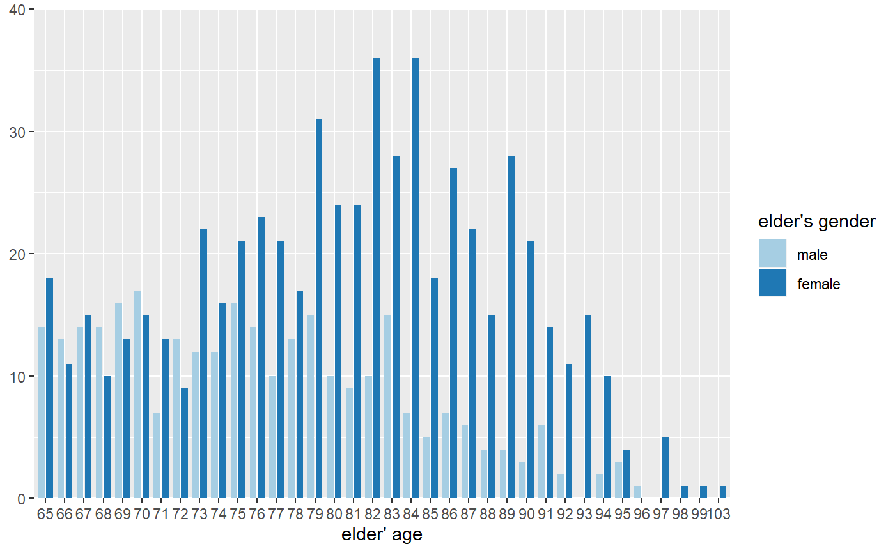
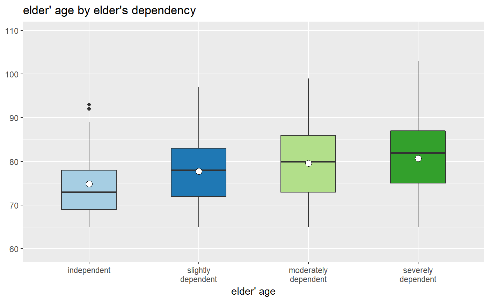
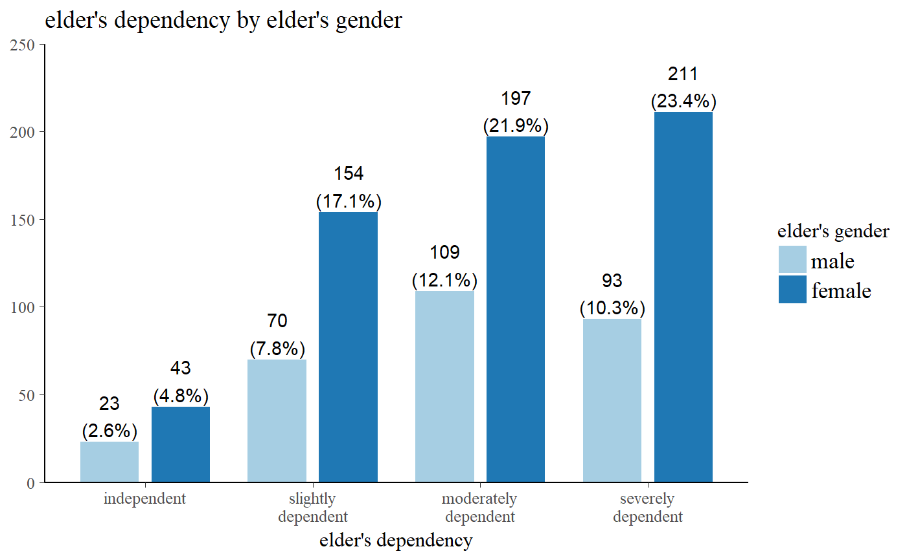
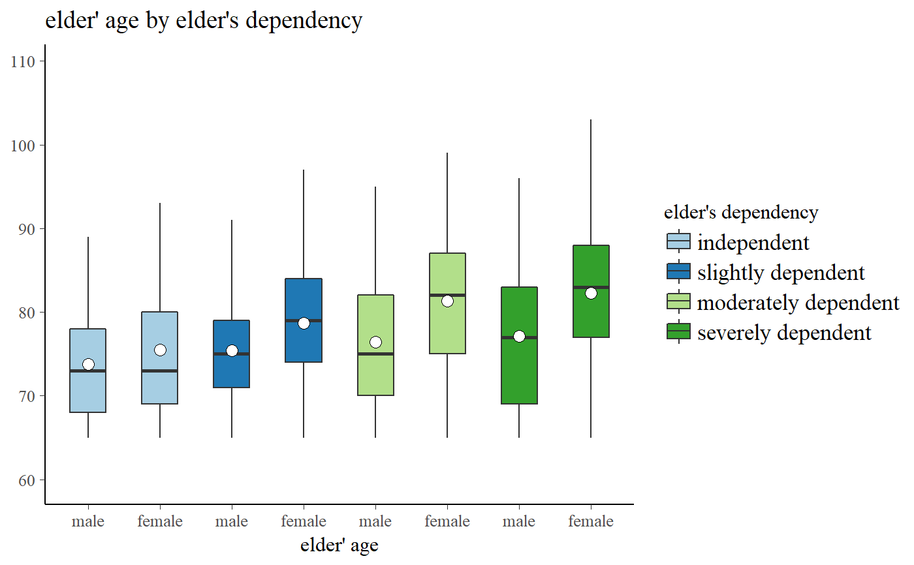
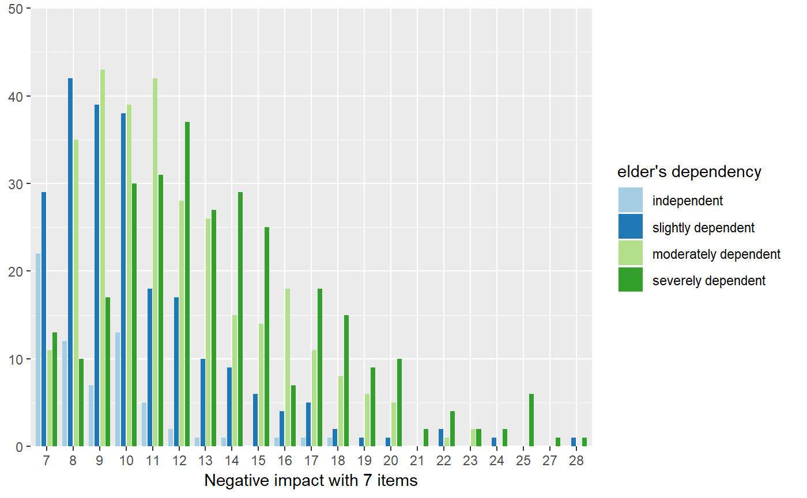
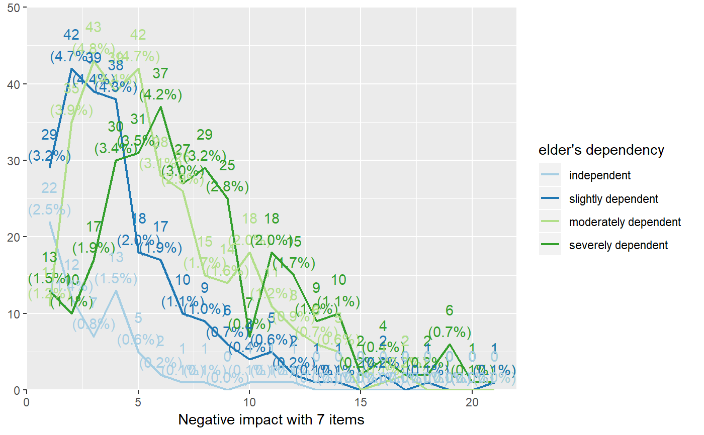

Plot grouped or stacked frequencies of variables as bar/dot, box or violin plots, or line plot.
sjp.grpfrq(var.cnt, var.grp, type = c("bar", "dot", "line", "boxplot", "violin"), bar.pos = c("dodge", "stack"), weight.by = NULL, intr.var = NULL, title = "", title.wtd.suffix = NULL, legend.title = NULL, axis.titles = NULL, axis.labels = NULL, legend.labels = NULL, intr.var.labels = NULL, wrap.title = 50, wrap.labels = 15, wrap.legend.title = 20, wrap.legend.labels = 20, geom.size = NULL, geom.spacing = 0.15, geom.colors = "Paired", show.values = TRUE, show.n = TRUE, show.prc = TRUE, show.axis.values = TRUE, show.ci = FALSE, show.grpcnt = FALSE, show.legend = TRUE, show.na = FALSE, show.summary = FALSE, auto.group = NULL, ylim = NULL, grid.breaks = NULL, expand.grid = FALSE, inner.box.width = 0.15, inner.box.dotsize = 3, smooth.lines = FALSE, emph.dots = TRUE, summary.pos = "r", facet.grid = FALSE, coord.flip = FALSE, y.offset = NULL, vjust = "bottom", hjust = "center", prnt.plot = TRUE)
| var.cnt | Vector of counts, for which frequencies or means will be plotted or printed. |
|---|---|
| var.grp | Factor with the cross-classifying variable, where |
| type | Specifies the plot type. May be abbreviated.
|
| bar.pos | Indicates whether bars should be positioned side-by-side (default),
or stacked ( |
| weight.by | Vector of weights that will be applied to weight all cases.
Must be a vector of same length as the input vector. Default is
|
| intr.var | An interaction variable which can be used for box plots. Divides each category indicated
by |
| title | character vector, used as plot title. Depending on plot type and function,
will be set automatically. If |
| title.wtd.suffix | Suffix (as string) for the title, if |
| legend.title | character vector, used as title for the plot legend. |
| axis.titles | character vector of length one or two, defining the title(s) for the x-axis and y-axis. |
| axis.labels | character vector with labels used as axis labels. Optional argument, since in most cases, axis labels are set automatically. |
| legend.labels | character vector with labels for the guide/legend. |
| intr.var.labels | a character vector with labels for the x-axis breaks
when having interaction variables included.
These labels replace the |
| wrap.title | numeric, determines how many chars of the plot title are displayed in one line and when a line break is inserted. |
| wrap.labels | numeric, determines how many chars of the value, variable or axis labels are displayed in one line and when a line break is inserted. |
| wrap.legend.title | numeric, determines how many chars of the legend's title are displayed in one line and when a line break is inserted. |
| wrap.legend.labels | numeric, determines how many chars of the legend labels are displayed in one line and when a line break is inserted. |
| geom.size | size resp. width of the geoms (bar width, line thickness or point size, depending on plot type and function). Note that bar and bin widths mostly need smaller values than dot sizes. |
| geom.spacing | the spacing between geoms (i.e. bar spacing) |
| geom.colors | user defined color for geoms. See 'Details' in |
| show.values | Logical, whether values should be plotted or not. |
| show.n | logical, if |
| show.prc | logical, if |
| show.axis.values | logical, whether category, count or percentage values for the axis should be printed or not. |
| show.ci | Logical, if |
| show.grpcnt | logical, if |
| show.legend | logical, if |
| show.na | logical, if |
| show.summary | logical, if |
| auto.group | numeric value, indicating the minimum amount of unique values
in the count variable, at which automatic grouping into smaller units
is done (see |
| ylim | numeric vector of length two, defining lower and upper axis limits
of the y scale. By default, this argument is set to |
| grid.breaks | numeric; sets the distance between breaks for the axis,
i.e. at every |
| expand.grid | logical, if |
| inner.box.width | width of the inner box plot that is plotted inside of violin plots. Only applies
if |
| inner.box.dotsize | size of mean dot insie a violin or box plot. Applies only
when |
| smooth.lines | prints a smooth line curve. Only applies, when argument |
| emph.dots | logical, if |
| summary.pos | position of the model summary which is printed when |
| facet.grid |
|
| coord.flip | logical, if |
| y.offset | numeric, offset for text labels when their alignment is adjusted
to the top/bottom of the geom (see |
| vjust | character vector, indicating the vertical position of value
labels. Allowed are same values as for |
| hjust | character vector, indicating the horizontal position of value
labels. Allowed are same values as for |
| prnt.plot | logical, if |
(Insisibily) returns the ggplot-object with the complete plot (plot) as well as the data frame that
was used for setting up the ggplot-object (df).
geom.colors may be a character vector of color values
in hex-format, valid color value names (see demo("colors") or
a name of a color brewer palette.
Following options are valid for the geom.colors argument:
If not specified, a default color brewer palette will be used, which is suitable for the plot style (i.e. diverging for likert scales, qualitative for grouped bars etc.).
If "gs", a greyscale will be used.
If "bw", and plot-type is a line-plot, the plot is black/white and uses different line types to distinguish groups (see this package-vignette).
If geom.colors is any valid color brewer palette name, the related palette will be used. Use display.brewer.all to view all available palette names.
Else specify own color values or names as vector (e.g. geom.colors = c("#f00000", "#00ff00")).
data(efc) sjp.grpfrq(efc$e17age, efc$e16sex, show.values = FALSE)# boxplot sjp.grpfrq(efc$e17age, efc$e42dep, type = "box")# grouped bars sjp.grpfrq(efc$e42dep, efc$e16sex, title = NULL)# box plots with interaction variable sjp.grpfrq(efc$e17age, efc$e42dep, intr.var = efc$e16sex, type = "box")# Grouped bar plot sjp.grpfrq(efc$neg_c_7, efc$e42dep, show.values = FALSE)# same data as line plot sjp.grpfrq(efc$neg_c_7, efc$e42dep, type = "line")